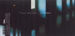

Home Artist links Label link

Gratto - Anakin Tumnus
| Artist: | Gratto |
| Title: | Anakin Tumnus |
| Label: | PMM PMM-0500A |
| Length(s): | 36 minutes |
| Year(s) of release: | 2002 |
| Month of review: | [10/2002] |
Line up
Gratto - piano, organ, vocals
Chris Rodler - guitars
Brett Rodler - drums
Gary Madras - bass
Tracks
| 1) | Passage Of Time | 9.04
|
| 2) | Call And Response | 10.25
|
| 3) | Shift | 16.53
|
Summary
Unknown as the name Gratto might be, the members have picked up enough experience in such bands as RH Factor and Leger De Main.
The music
Passage Of Time sets the tone for the album. Many facets are blended into a complex whole that has both moments of peace and (apparent) war. The track starts with gentle vocals, moving into the opening keys. This sets us off on a sequence of different sections, from slow to fast, tranquil to hard, but resulting in one whole.
Call And Response starts with a gentle piano vocal section, with the same echo-effect as the start of UK's Carrying No Cross, sending shivers down my spine all over again. From here the band build momentum towards a guitar intermezzo. This interchange continues with gradually stronger guitar sections. From this the intensity only increases into a seeming turmoil that's constantly in control.
Shift starts with acoustic guitar, gradually more and more supported by drums and bass. This section is a little too long for my tastes, but as it finishes we soon enough move back into top gear... only to move into a piano section that has a classical feel. From this top gear is found again.
Conclusion
Three long pieces, each showing (near) immaculate song writing, played with an intensity and directness that remind me of such favourites (of mine, anyway) as Van Der Graaf Generator or Anekdoten, without wanting to imply that the music is anything like that of those two. Probably the best I've heard so far this year.
www.pmm-music.net
© Roberto Lambooy